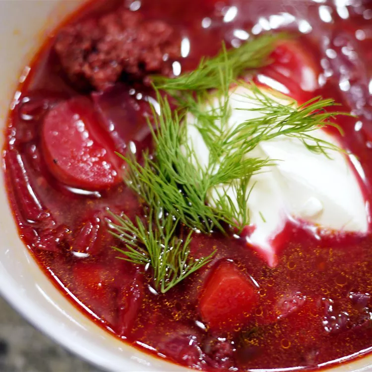

Borscht is a classic beet soup that's so comforting and delicious.
Borscht is a sour soup that is traditionally made with meat stock and boiled vegetables. The Ukrainian version, which features beets, is perhaps the most well known type — but varieties of borscht can be found throughout Central and Eastern Europe and Northern Asia.
These are the ingredients you’ll need to make this top-rated borscht recipe:
You’ll find the full, step-by-step recipe below — but here’s a brief overview of what you can expect when you make Ukrainian borscht: